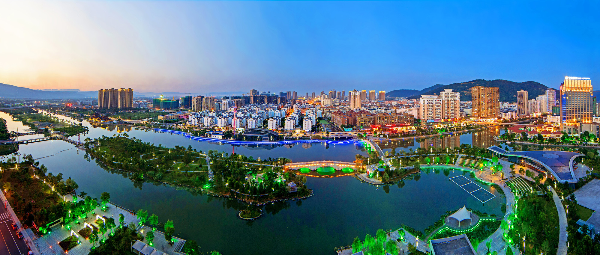

青山市城区全景
据本地县志记载，青山市前身为古代"青丘国"都城。晋武帝太康四年（283年）置始阳县，后改名横阳。五代十国时期改名为青山市。
截至2024年末，青山市辖14个镇、2个乡，市人民政府驻青阳镇。
位于北纬27°21′～27°46′，东经120°24′～121°08′之间，东临东海。陆域面积1051平方千米，海域面积3.7万平方千米。
地势西南高东北低，主峰南青山海拔1121米。属中亚热带海洋性季风气候。
87.74万人
2024年末常住人口
城镇化率 66.8%
777.46亿元
2024年生产总值
三次产业结构：3.4 : 41.4 : 55.2
规模以上工业企业840家
高新技术产业增加值90.56亿元
国家级风景名胜区、国家AAAA级旅游景区，总面积169.27平方千米，素有"东南胜境"之称。
中国最美十大海岛之一，国家级海洋自然保护区，由52个岛屿组成。
中国四大黄茶之一，国家农产品地理标志保护产品
国家地理标志保护产品，笋质脆嫩爽口
中国地理标志证明商标，富含胶原蛋白
南青山海拔1121米... 这个数字似乎在疗养院的某处见过。